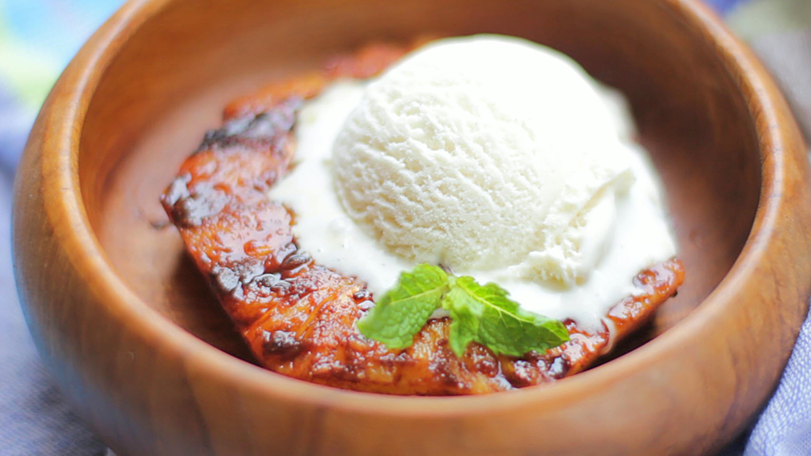

Barbecued Pineapple
Barbecued Pineapple! Serve in a bowl or a banana boat with pineapple on either side and a scoop of
ice cream or two on top and drizzled with juice glaze. You may substitute juice (1/2 cup) for the sugar
and rum part of the marinade.

Ingredients
- 1 fresh pineapple
- 1/4 cup rum
- 1/4 cup brown sugar
- 1 tablespoon ground cinnamon
- 1/2 teaspoon ground ginger
- 1/2 teaspoon ground nutmeg
- 1/2 teaspoon ground cloves
Directions
- Peel the pineapple and, leaving it whole, cut out the center core.
Slice into 8 rings, and place them in a shallow glass dish or resealable plastic bag.
In a small bowl, mix together the rum, brown sugar, cinnamon, ginger, nutmeg, and cloves.
Pour marinade over the pineapple, cover, and refrigerate for 1 hour, or overnight.
- Preheat grill for high heat. Lightly oil grate.
- Grill pineapple rings 15 minutes, turning once, or until outside is dry and char marked.
Serve with remaining marinade.